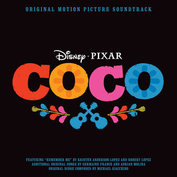

Canciones
Brave
Volaré
- Artista: Russian Red
- Álbum: Brave
- Fecha de lanzamiento: 2012
- Video: https://www.youtube.com/watch?v=Vy0VoyyxHEU
Intro Violín
| D | D | D | C C C |
| D | D | D | C C C |
| D | D | D | C C C |
| Am | Am | Am | Am |[Verse]
D G D G
Allá donde el viento habla y el cielo es más azul
Bm A G D A
allá donde las estrellas te iluminan con su luzEstribillo
Bm7 G D A Bm7
Correré, volaré, con el viento cabalgaré
G D A D
Volaré, con el viento cabalgaré D G D A
Na-na Na-na Na-na Na-na Na Na Na-na Na
D G D A
Na-na Na-na Na-na Na-na Na Na Na-na NaBm (mantener) | A[Verse]
D G
Allá donde el bosque esconde
D G
secretos que nunca sabrás
Bm A G
las montañas se hacen eco
D A
de historias de tiempo atrás
D G
Cruzaré ríos y valles
D G
y a las cumbres subiré
Bm A G
seré fuerte como las rocas
A D
y orgullosa gritaréEstribillo
Bm7 G D A Bm7
Correré, volaré, con el viento cabalgaré
G D A D
Volaré, con el viento cabalgaré[Instrumental]
D G D A
Na-na Na-na Na-na Na-na Na Na Na-na Na
D G D A
Na-na Na-na Na-na Na-na Na Na Na-na Na
D G D A
Na-na Na-na Na-na Na-na Na Na Na-na Na[Outro]
D G D G
D G DVaiana
🎸 Que hay más allá
- Artista: María Parrado
- Película musical: Vaiana
- Fecha de lanzamiento: 2016
| Tonalidad | Tempo | Compás | Capo |
|---|---|---|---|
| Mi mayor | 84 bpm | 4/4 | No |
Estrofa
E B/F# C#m
He buscado siempre aquí una respuesta, Esperando en la orilla
Asus2
Y no sé muy bien por qué,
E B/F# C#m
Sólo quiero ser la hija perfecta, Pero regreso a la orilla,
Asus2
no hay nada que pueda hacer.[Bridge]
C#m B/D#
Cada amanecer, cada sensación, Cada atardecer, al caer el sol,
E Am6
Vuelvo a imaginar que hay algún lugar donde debo ir...Estribillo
E B/D#
Veo la línea entre el cielo y el mar en frente,
C#m A
¿quién sabrá si hay más allá?
E B/D#
Y si el viento que sopla de cola es fuerte
C#m
Me llevará,
Am6 E
Si me voy un mundo nuevo descubriré.[Bridge]
B C#m AEstrofa
B/D# C#m
Ya sé que aquí todos en la isla piensan que son muy felices,
A
Todos se dejan llevar,
E B/D#
Sé que todo el mundo en esta isla,
C#m
Tiene un sitio concreto,
C#m/B A
Todos tienen su lugar.[Bridge]
C#m
Puedo liberar, con fuerza y pasión,
B/D#
Lo puedo intentar, seguiré en mi rol,
E
Pero esa voz canta otra canción,
Am Am6
¿que me pasa a mí?Estribillo
E B/D#
Hoy la línea entre el cielo y el mar me ciega,
C#m A
¿quien sabrá si hay más allá?
E B/D#
Y parece llamarme desde allí con gran fuerza,
C#m Am Am6
Aquel lugar, que hay detrás del sol allí quiero ir yo.
F C
Hoy la línea entre el cielo y el mar me llama,
Dm A#
Y ¿quien sabrá, a donde irá?
F C
Y si el viento que sopla de cola me lleva,
Dm Dm/C G#
Sabré al final yo que hay más alláaUn nuevo hogar
| Tonalidad | Tempo | Compás | Capo |
|---|---|---|---|
| La mayor | 101 bpm | 4/4 | No |
Estrofa
A
Tatou o tagata folau e vala'auina
A
E le atua o le sami tele e o mai
D
Ia ava'e le lu'itau e lelei
E A
TapenapenaEstribillo
D
Aue, aue
A
Nuku I mua
E A
Te manulele e tataki e
D
Aue, aue
A
Te fenua, te malie,
E
Nae ko hakilia mo kaiga eEstrofa
A
Sabemos el viento leer Con gran nitidez,
A
Surcamos el ancho mar Con facilidad,
D E A
Y cada estrella ahí está Justo en su lugar,
A
Sabemos mirar de verdadEstribillo
D A E A
Aue, aue, Vamos a donde hay, una isla nueva donde enraizar,
D A E
Aue, aue, en nuestra mente la isla está. Sabemos que está cerca, un nuevo hogar
D F#m
Aue, aue, No dejaremos nunca de explorar,
E E
Las tradiciones transmitimos en un ciclo sin final,
D
Aue, aue,
A
Te fenua, te mālie
E
Nā heko hakilia
E A
Un nuevo hogarDe nada
| Tonalidad | Tempo | Compás | Capo |
|---|---|---|---|
| Fa mayor | 135 bpm | 4/4 | No |
Verse
Jaja, vale vale
C F/C
Ya sé qué pasa aquí
A# C
Se te hace raro la grandeza ver,
C F/C
Y no sabes bien qué sentir (adorable)
A# C
Los humanos veo que nunca cambiaréis.
C F/C
Abre tus ojos, vamos ya;
A# C
sí, asúmelo: soy Mauí de verdad.
C F/C
Admírame bien -qué bueno estoy-,
A# C
estás justo frente a un semidios.Estribillo
Am F C
¿Qué puedo decir? Solo «de nada»
E7 Am
por el cielo, el mar y el sol.
F C
No hay de qué, está bien, de nada;
E7 C
soy sólo un tipo cachas muy normal.Estrofa
C F/C
¡Hey! ¿Quién levantó el cielo con su pulgar
A#
cuándo ni caminabais? ¡El menda!
C C
Cuándo el frío llegó,
F/C
¿quién piensas que el fuego robó?
A#
¡Lo tienes delante!
C F/C
¡Oh! También cacé un día el sol–de nada-
A# C
para darte luz y calor.
C F/C
El viento también domé –¡de nada!-
A# C
y así los barcos impulsé.Estribillo
Am F C
¿Qué puedo decir? Solo «de nada»
E7 Am
por las islas que hice emerger
F C
por las islas que hice emerger
E7 Am
para que podáis vivir –de nada-. ¡Ja
F C
¡De nada! De nada.
C
de nada[Rap]
Bien, piénsalo un poco...
C
Oye, puedo seguir y seguir aún más;
puedo explicar cada cosa desde el Big Bang:
C
las mareas, la hierba, la tierra...
fue sólo Mauí que estaba de fiesta.
C
Maté una anguila, su cuerpo enterré,
un árbol brotó y ahora cocos tenéis.
C
¿Cuál es el punto? Aprende la lección:
ojo con Mauí si ves que está en plena acción.
Am
Y el tapiz que he pintado en mi piel
F
es un mapa de lo que logré.
C
Míralo bien, hago que todo pase.
E7
Mira, aquí hay un mini-Mauí bailando claqué.
Ja, ja, ja, ja, ja, ja. ¡Ey!Estribillo
Am F C
Deja que diga otra vez «de nada» (de nada)
E7 Am
por crearos un mundo así.
F C
No hay de qué, está bien, de nada (de nada).
E7 Am
Medítalo muy bien, te digo adiós.
F C
Te toca a ti decir «de nada» (de nada),
E7 Am
pues en tu barco me voy.
F C
Muy lejos navegaré –de nada (de nada)-,
E7 Am
todo menos flotar puedo hacer yo.[Outro]
F/C
(De nada) De nada
C
(De nada) de nada
C
Y gracias!Brillante
| Tonalidad | Tempo | Compás | Capo |
|---|---|---|---|
| Do mayor | 73 bpm | 4/4 | No |
Estrofa
Em Am
Hace tiempo no tenía este
Em Am
glamour Fui un cangrejito muy soso...
Em Am
Pero ahora estoy feliz y en
Cm Am7b5
plenitud, Porque soy muy bello, nena.
Em Am
Tu corazón tu abuela te hizo
Em Am
escuchar. Sé cómo eres por dentro.
Em Am
Ese argumento yo lo voy a
Cm Am7b5
desmontar, Ella mintió. Mejor ser:Estribillo
G C
¡Brillante! Cual tesoro de un navío que se
G C
hundió. La cubierta tengo
G C
¡Brillante! Igualito que un collar de un
D
millón ¡Un segundo! ¿Sabes que...
Em C
...Los peces tontos son:
Em
Buscan siempre algo brillante.
C D
¡Principiantes!
Em C
Oh Y van sin ton ni son
Am
Hacia aquello más radiante.
D
¡Mmm qué rico!
Eb
Ven, pescadito (pescadito)
Eb
con vestidito (¡pescadito!)Descanso
¡Vaya, vaya,
Em Am
vaya...! Maui tiene, con su aspecto, un
Em Am
problemín. Pequeño semi-mini-mini-dios.
Em Am
¡Auch! ¡Qué espectáculo terrible!¡Ven
Cm D
aquí! Vale. El anzuelo grande ya te
Em Am
va. Sin embargo algo te he de
Em Am
agradecer, Y a los tatoos de tu cuerpo,
Em Am
Pues yo también de mí una obra de arte
Cm Am7b5
creé. ¿O no lo ves? Yo soy muyEstribillo
G C
¡Brillante! Yo reluzco cual diamante o cual
G C D
rubí, Soy así, un tipo
G C
¡Brillante! Ni un ejército me haría
Am D
sucumbir. Me basto a mí. Maui, tío...
Em C
Lo puedes intentar,
Am D
Pero nunca antes un semi-dios Ganó a un decápodo.¡Míralo!
Em C
Tú ahora morirás,
Am D
Yo te sacaré con precisión Tu corazón.Puente
Eb Bb Eb
Lejos de aquellos que te abandonaron
Bb Eb Bb
Buscaste entre humanos amor y cariño.
C Dm
Muy duro te crees,
Eb F
Pero tu coraza frágil es.
Bb
¡Maui!
G#
¡Ahora voy a patearte! ¿Viste a alguien tan...Estribillo
G C
...Brillante? Lo último que tú verás será a
G C F
mí. C'est la vie, mon ami...
G Am
¡Soy brillante! Un deseo antes de comerte
G D
pedirás. ¡Morirás!Final
Eb
Jamás serás tan radiante,
Eb
Jamás serás tan
G
¡brillante!Coco

Un poco loco
| Tonalidad | Tempo | Compás | Capo |
|---|---|---|---|
| Sol mayor | 126 bpm | 3/4 | No |
Intro
G C G D GEstrofa
D G
Que el cielo no es azul
D G
¡Ay mi amor! ¡Ay mi amor!
D G
Que es rojo dices tú
D G
¡Ay mi amor! ¡Ay mi amor!
D G
Vez todo al revés
D G
¡Ay mi amor! ¡Ay mi amor!
D G
Creo que piensas con los pies
D G
¡Ay mi amor! ¡Ay mi amor!
G C
Tú me traes un poco loco
D G
Un poquititito loco
G C
Estoy adivinando
D G
Que quieres y pa' cuando
G D
Y así estoy celebrando
C D G
Que me he vuelto un poco loco..[Instrumental]
D G D G D G D G D G D G EA D
Chiflado tú me vuelves
E A
Y eso está un poco loco
A D
Tu mente que despega
E A
Tú siempre con ideas
A E
Con mi cabeza juegas
D E A
Todo es un poco loco..[Outro]
A D
Todo es un poco loco
E A
Con mi cabeza juegas
A D
Todo es un poco loco
E A
Con mi cabeza juegas
A D
Todo es un poco loco
E A
Con mi cabeza juegas
A D
Todo es un poco loco
E A
Con mi cabeza juegas
A D E A
Un poquitititi titi titi titi tititito locoEl latido de mi corazón
| Tonalidad | Tempo | Compás | Capo |
|---|---|---|---|
| Fa mayor | 174 bpm | 3/4 | 3 |
Intro
D C G DEstrofa
D C
Dirás que es raro
G D C G D
Lo que me pasó
D C
Parece que anoche
G D C G A
Te encontré en mis sueños
G
Las palabras que dije
G
Se volvieron canción
D A
versos que tuyo son
G A
Y el recuerdo nos dioEstrofa
D G A D
Una melodía bella que el alma tocó
D G A Bm
Con el ritmo que vibra En nuestro interior
D G A Bm
Amor verdadero nos une por siempre
D G A Bm
En el latido de mi corazón
D G A Bm
Amor verdadero nos une por siempre
D G A D
En el latido de mi corazón[Instrumental]
B7Estribillo
E A
Ay, mi familia
B E
Oigan mi gente
E A B
Canten a coro nuestra canción
E A B C#m
Amor verdadero nos une por siempre
E A B E
En el latido de mi corazónEstribillo
E A
Ay, mi familia
B E
Oigan mi gente
E A B
Canten a coro nuestra canción
E A B C#m
Amor verdadero nos une por siempre
E A B E
En el latido de mi corazónRecuérdame
| Tonalidad | Tempo | Compás | Capo |
|---|---|---|---|
| Fa # mayor | 80 bpm | 4/4 | No |
Intro
B | Bb Ebm | D | Db
Estrofa
F# Bm
Recuérdame hoy me tengo que ir mi amor
F# E9 A#7
Recuérdame, no llores por favor
D#m E F#7
Te llevo en mi corazón y cerca me tendrás
B D C#7
A solas yo te cantaré soñando en regresarEstrofa
F# Bm/D#
Recuérdame, aunque tenga que emigrar
F# C#m7 F7
Recuérdame, si mi guitarra oyes llorar
B Bbm B/D Ebm
Ella con su triste canto te acompañará
D C#sus4
Hasta que en mis brazos estés
C#sus4 D E F#
Re-----cuérdameee[Interlude]
F# | Bm/D | F# | Bm Bb
D#m |E F# | B | D Db
Estrofa
F# Bm
Recuérdame hoy me tengo que ir mi amor
F# E A#7
Recuérdame, no llores por favor
D#m E F#
Te llevo en mi corazón y cerca me tendrás
B D C#7
A solas yo te cantaré soñando en regresarEstrofa
F# Bm
Recuérdame, aunque tenga que emigrar
F# C#m F#
Recuérdame, si mi guitarra oyes llorar
E Bbm Bb7 Ebm
Ella con su triste canto te acompañará
D C#sus4
Hasta que en mis brazos estés
Gbm/Db D E F#
Re cuérdameeeFrozen

Suéltalo
| Tonalidad | Tempo | Compás | Capo |
|---|---|---|---|
| La b mayor | 80 bpm | 4/4 | 1 |
Intro
| Em | Cmaj7 | D | Asus4 Am |
| Em | Cmaj7 | D | Asus4 A |Estrofa
Em Cmaj7 D Asus4 Am
La nieve brilla esta noche aquí más ni una huella queda ya
Em Cmaj7 D Asus4 Am
soy la reina en un reino de aislamiento y soledad
Em Cmaj7 D Asus4
el viento aúlla y se cuela en mi interior
Em D Asus4 A
lo quise contener pero se escapóPre-chorus 1
D C
No dejes que sepan de ti
D
"que no entren" siempre me dijo a mi
C
"no has de sentir no han de saber"
Cadd9*
¡ya que más da!Chorus
G Dsus4/F# Em7 Cadd9
¡Suéltalo! ¡suéltalo! no lo puedo ya retener
G Dsus4/F# Em7 Cadd9
¡suéltalo! ¡suéltalo! ya no hay nada que perder
G Dsus4/F# Em7 Cadd9
que más da, ya se descubrió,
Bm Bb
déjalo escapar
C Gsus4 G D/F#
el frío a mi nunca me molestóVerse 2
Em C D Am
Desde la distancia que pequeño todo es
Em Dsus2 Asus4 A
el temor que me aferraba no me va a hacer volverPre-chorus 2
D C D
Soy libre y ahora intentaré, sobrepasar los límites
C Cadd9
ya no hay mas reglas para mi, ¡por fin!Chorus
G Dsus4/F# Em7 Cadd9
¡Suéltalo! ¡suéltalo! que el frío reine ya
G Dsus4/F# Em7 Cadd9
¡suéltalo! ¡suéltalo! no volveré a llorar
G Dsus4/F# Em7 Cadd9
aquí estoy y aquí estaré,
Bm Bb
déjalo escaparInterlude
| Csus2 | Csus2 | Csus2 | Csus2 |Bridge
Csus2
En las entrañas de la tierra puedo entrar
mi alma crece y hace espirales sin parar
D
y un pensamiento en mi surgió y cristalizó
Em C D Am
ya no regresaré el pasado ya pasóChorus
G Dsus4/F# Em7 Cadd9
¡Suéltalo! ¡suéltalo! subiré con el amanecer
G Dsus4/F# Em7 Cadd9
¡suéltalo! ¡suéltalo! la farsa se acabó
G Dsus4/F# Em Cadd9 Cmadd9
Que la luz salga otra vez
Bm Bb
¡déjalo escapar!
C
el frío a mi nunca me molestóMuéstrate
| Tonalidad | Tempo | Compás | Capo |
|---|---|---|---|
| Fa # Mayor | 123 bpm | 4/4 | No |
Intro
N.C.
Pues claro, los glaciares son rios de hielo
N.C.
El Ahtohalan está helado
N.C.
ah-aaaah-aah-aaaaah
F# C# F# B
Te oigo, estoy llegandoVerse 1
F# C#
Siento que todo me tiembla
F# B
Del frío no eeeeeeees
F# C#
Hay algo en el aireee
F# B
Como un sueño que está, pero no ves
F# C#
Sé que estás ahiiiiií
D#m C#
Como un amigo fieeeeeeel
B C#
Estoy llegandooo
F# B
Y por fin me encuentro bieeeeeeeenPre-chorus
C#add4 C#add4/B B
Siempre fui una fortaleza Con secretos que guardar
Badd4 A A/D D
Justo como tú, pero no te escondas másChorus
D#m B C#add4
Muéstrate, quiero conocerte
D#m B C#
Muéstrate, te toca a ti
D#m B F# C# A#7
Eres quizá aquello que siempre Yo añoree ee ee eeeeeeé
D#m B G#
Muéstrateeee, yo quiero aprender
D#m B
Ah-aah-ah-aaah
Em A
Ah-aah-ah-ah-aaaaahVerse 2
G5 D/F# G5 G5/A
Jamás lo vi tan claro, Todo en mí era temooooooor
G D/F# G C
Pero aquí estoy por algo, yo he nacido por una razón
D Dadd4/C C
Siempre he sido diferente, como de otra realidad
Bb
Será el día hoy, serás tú quien
Eb D
me enseñe mi verdaaaaadChorus
N.C Em C D
Muéstrate, ya no estoy temblando
N.C Em C D
Aquí estoy, No hay vuelta atrás
Em C G D
Llevo esperando una vida y yo, quiero entendee ee eer
N.C Em C A7
Oh, muéstrate, que ya te quiero verBridge
D D7
Ven a mí ya, déjame entrar
Em C G
No esperaré, ni un día más
D
Ven a mí ya, déjame entrar
Em C G
No esperaré, ni un día másVerse 3
B D#m G#
Donde el viento halla el mar (ah ah ah ah)
B F#
Por un río (ah ah ah ah) la memoria va (madre!)
G# B
Ven, mi amor, hacia tu hogar
B
¡Aquí estoooooy!Chorus
Fm Db Eb
Muéstrate, Que el poder te dé fuerza
Fm Db Eb
elévate, Mucho más allá
Fm Db
Has esperado una vida, y tú
Ab Eb
¡Y aquí estoy! - ¡Aquí estás!
Fm Db
MuéstrateeeeeeeeeeeeeeOutro
Bb
Túu (Ah-ah-ah)
Db E
Ah-ah, ah-ah-ah
Ab
Ah-ah, ah-ahPor primera vez en años
| Tonalidad | Tempo | Compás | Capo |
|---|---|---|---|
| 95 bpm | 4/4 | No |
Verse
F Bb/F
La luz está entrando en el salón
Fmaj7 Bb/F
Por fin, se ilumina cada rincón
F F/A C
Y ahora sacan la vajilla real
F Bb/F
Por estos salones deambulé
Fmaj7 Bb/F
Sola vagué una y otra vez
Dm Dm/C Bbm7b5 G7
Hoy por fin las puertas se abriráaaaaaaaaan
Dm Am
Y vendrán de todas partes
C A#
Qué raro se me va a hacer
Eb Csus2/4
Hay tantas cosas que quiero emprenderChorus
F/A Bbadd2
Hoy por primera vez en años
C/E Fadd2
Habrá luz y música
Dm Am
Por primera vez en años
Eb A7
Bailaré hasta no poder más
Dm Dm/C
No sé si es emoción o gases
Bbmaj7 G9/B
Pero hay algo en mi interior
F5/Ab Bbsus2
Pues por primera vez en años
C7sus F
Me late el corazónInterlude
N.C.
Voy a conocer a muchas personas
N.C.
¿Y si encuentro hoy la persona?Verse
F# B/F#
Vestido de gala llevaré
D#m C#
Con pose estudiada esperaré
F# B D#m C#
Sofisticada y tierna a la vez
F# B
Y de repente allí estará
D#m C#
Un joven galán se acercará
F# B D#m C#
Y de los nervios me pondré a comer
D#m A#m
Y luego reiremos juntos
C# B
Charlaremos sin parar
E C#
Como nunca pude imaginarChorus
F# B
Por primera vez en años
C# F#
Habrá magia y diversión
D#m A#
Por primera vez en años
E C#
Me prestará alguien su atención
D#m A#m
Ya sé que es una locura
C# B
Pensar en el amor
F# B
Mas por primera vez en años
C# F#
Me late el corazónInterlude
D#m A#m
(Elsa) No dejes que sepan de ti
C# G#
Que no entren, siempre me dijo a mí
D#m A#m C#
No has de sentir, No has de esconder
G#m A#m
Un paso en falso y se echará a perder
F# C#
Elsa: Pero pronto pasará (Pronto pasará)
B C#
Anna: Qué duro es esperar (Qué duro es esperar)Verse
Em Bm C F
Que abran el portón de par en par (En par)
G C
Por primera vez en años (No dejes que sepan de ti)
D G
Tendré lo que siempre soñé (Que no entren siempre me dijo a mí)
Em C
Esta ocasión es la mejor (No sé)
F D
Para encontrar mi amor (No has de sentir, no han de saber)
Em Bm
Mañana todo habrá acabado
D C
Solo tengo el día de hoy
Em C
Pues por primera vez en años
G C
Por primera vez en años
F C
Me late el corazónHazme un muñeco de nieve
| Tonalidad | Tempo | Compás | Capo |
|---|---|---|---|
| Mi bemol Mayor | 76 bpm | 4/4 | 3 |
Introduccion
Ana:¿Elsa?Verse 1
C G/B
Hazme un muñeco de nieve! Venga vamos a jugaaar
G F Am Gm C/E
Ahora ya no te puedo ver, no sé muy bien lo qué ha podido pasaaaaaaaar!
F C F E Am D
Eramos inseparables, y ahora ya no, no lo logro comprendeeeeeer!
Dm Fm/G#
Hazme un muñeco de nieve! O lo que sea me da igual!
Elsa: Déjame Ana
Fm C
Ana: Vale, adiós
Ab C | Ab C | C |
Ab G
Verse 2
C G/B
Hazme un muñeco de nieve! O ven en bici a montar
F Am Gm C
Que necesito compañía ya,, que a los cuadros ya les he empezado a hablar! (Ánimo Juana)
F Em E7 Am D
Me siento un poco sola, me aburro ya, mirando las horas pasaaaaar! (Tic-Tock, Tic-Tock)
C F
Hazme un muñeco de nieve! O lo que sea me da igual!Interludio
Ab | F | Ab | -
- | C | - | - Hundimiento del barco
Fm | Eb D
Fm | Eb D
Fm | Cm/G
Ab | -
G | -
C |-Ana: ¿Elsa?
Verse 3
C G
Sé que estás ahí dentro. Siempre preguntan donde estás
F Am Em
Dicen que intenté tener valor, Pero ya no puedo más, déjame entrar
F G C E7 Am Em/B D7
Ya no nos queda nadie, solo tú y yo, ¿Y ahora qué va a pasa aaaar?
C
Hazme un muñeco de nieve!Final
C F | C G
G | Am F
F Am | F/A | -Mucho más allá
| Tonalidad | Tempo | Compás | Capo |
|---|---|---|---|
| Re bemol Mayor | 148 bpm | 4/4 | No |
Intro
D#m G# D#m G#
Ooh ooh oh ooooh, Ooh ooh oh ooooh[Verse 1]
D#m D#m9 D#m
Puedo oírte, déjalo
G# G#9 G#
Hay quien se arriesga pero yo no
F# C#/F#
Más de mil razones hay para seguir igual
F# C#/F# D#m
Oigo tus susurros que ojalá se fueran yaa ooooh, D#m G#
Ooh ooh oh ooooh (oh ooh)
D#m G#
Ooh ooh oh ooooh oooh[Verse 2]
D#
No habla una voz, eres un ruido en mi interior
G# G#9 G#
Y aunque te oyera -y es que no- no hay más que hablar, adiós
F# C#/F#
Todo aquel que he querido está en este lugar
G# A#7
Perdóname sirena no te voy a escucharPre-coro
Cm
Viví ya mi aventura y todo quedo ahí
G#sus4 G#
Tengo miedo de seguirte y arriesgarme a irEstribillo
D# G# Cm
Mucho más allá, Mucho más allá, Mucho más allá
D#m G#
Ooh ooh oh ooooh
D#m G#
Ooh ooh oh ooooh[Verse 2]
D#
¿Qué quieres tú? Ya no me dejas ni dormir
G#
¿Has venido a distraerme? No me quieras confundir
F# C#/F#
O tal vez seas alguien que es muy parecido a mí
G#sus4 A#
Que en su interior sabe que no es de aquíPre-coro
Cm
Cada día es más difícil según crece mi poder
G#sus4 G# A#m
Algo hay en mi interior que quiere irEstribillo
D# G# Cm
Mucho más allá, Mucho más allá, Mucho más allá
G# A#
Ooh ooh oh oooohPuente
A# G# G#
Ahora puedes conocerme, arroparme, enseñarme
C
Ooh ooh (oohooh)
F
Ooh ooh (oohooh)
C
Ooh ooh ooh ooh
C
Ooh ooh ooh oohFinal
Dm
¿A dónde vas? No me dejes atrás
C# C#m
¿Cómo te sigo a ti
C
Mucho más alláToy story
Hay un amigo en mi
Capo 3
C Gaug C C9
Hay un amigo en mí
F F#dim C C7
hay un amigo en mí
F C/E E7 Am
Cuando eches a volar
F C/E E7 Am
Y tal vez añores tu dulce hogar
F B/F# C/G E/G# F E Am
Lo que te digo debes re-cor-dar
D7 G7 C A7
Porque hay un amigo en mí
D7 G7 C
Sí hay un amigo en mí
C Gaug C C9
Hay un amigo en mí
F F#dim C C7
Hay un amigo en mí
F C E7 Am
Y cuando sufras aquí me tendrás
F C E7 Am
No dejaré de estar contigo ya verás
F C E7 Am
No necesitas a nadie más
D7 G7 C
Porque hay un amigo en mí
D7 G7 C C7
Hay un amigo en míPuente
F B
Otros habrá tal vez mucho más listos que yo
C6 B7 C6
Eso puede ser tal vez
B7 Ddim7 B/F#
Mas nunca habrá quien pueda ser
Em A7 Dm7 G7
Un amigo fiel y tú lo sabes
C Gaug C C7add9
El tiempo pasará
F F#dim C
lo nuestro no morirá
F F#dim C E7 A7
Lo vas a ver es mejor saber
D7 G7 C A7
Que hay un amigo en mí
D7 G7 C A7
Hay un amigo en mí
D7 G7 C
Hay un amigo en mí